A zero to 100 explanation of how Ethereum rollups work
Intro
This guide is intended to cover everything you need to know about rollups and how they work, in one place, with as little assumed knowledge as possible. We'll start with knowledge that > 90% of you already know, such as why scaling is needed, and very quickly delve into details that < 1% of the community fully grasps.
Because the guide is intended to cover everything all in one place, it's long. If you feel as though you already have a grasp on the basics, feel free to skip to some of the more advanced sections.
Why is scaling needed?
As the number of people using Ethereum has grown, the network has reached capacity. When this happens, costs for using the network go up, creating the need for scaling solutions.
The Ethereum network's (target) capacity is currently ~14 transactions per second (TPS). Any time there are more than ~14 TPS on the network, users will get into a bidding war to ensure that their transaction is prioritised. Only the top ~14 transactions each second, when ranked by how much they are willing to pay in fees, will have their transactions processed. In times of high congestion, this can lead to very high transaction fees as demonstrated in the graph below.
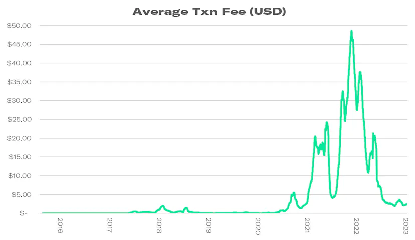
Ethereum cannot achieve its goal of becoming the world computer when it charges $20 per transaction. Vitalik claims that "the internet of money should not cost 5 cents a transaction," implying that a transaction fee of even $0.05 is too high. Consider if you wanted to use Ethereum to buy a coffee, would you pay a $20 fee to purchase a $5 coffee?
The narrative used to be that blockchains could never scale and the industry was doomed. Fortunately, the narrative has shifted away from "whether or not blockchains can scale" to "which scaling solution will win." We'll examine what's emerging as a potential winner: Rollups. Ethereum needs scaling solutions, like rollups, to bring its transaction fees way down or it risks being replaced by a more scalable competing blockchain network.
What sets Ethereum’s capacity limit?
The Ethereum block gas limit sets the capacity of Ethereum by capping the maximum units of computation in each block. The block gas limit on Ethereum currently targets 15,000,000 units of gas per block. Each transaction on Ethereum costs a number of units of gas. A simple ETH transfer costs 21,000 units of gas, the more complex the transaction, the more units of gas it costs. The average gas cost of a transaction on Ethereum is currently ~90,000 units of gas.
The average Ethereum block can fit 15,000,000 / 90,000 = ~167 transactions. Blocks are produced on Ethereum every 12 seconds so we can calculate TPS as ~167 / 12 = ~14 TPS.
How to Scale Ethereum
There are two ways to scale Ethereum:
- On-chain scaling; or
- Off-chain scaling
On-chain scaling
If the block gas limit sets the limit for Ethereum's scalability, why can't you just increase it? The short answer is you can, and we have. The long answer is
The Scalability Trilemma.
When Ethereum first launched in 2015, it had a block gas limit of 5,000 units of gas. It has since been increased on 13 different occasions to where it sits today with a target limit of 15,000,000 units of gas and can increase to 30,000,000 units of gas during very high congestion. You can also increase Ethereum's capacity by keeping the block gas limit the same but reducing the units of gas it costs for a transaction.
The Scalability Trilemma
The scalability trilemma states that a blockchain should aim to achieve three properties:
- Scalability – the blockchain can process lots of transactions, measured in TPS.
- Decentralisation – the blockchain is run by many “trustless” nodes across the world, not run by a small group of centralised “trusted” nodes.
- Security – the blockchain is resistant to attack even if there are malicious nodes in the network. Ideally, it should be able to handle up to 50% of nodes being malicious.
Most blockchains can achieve at least two of three desired properties but achieving all three is extremely difficult. Generally, optimising for one property comes at the cost of another.
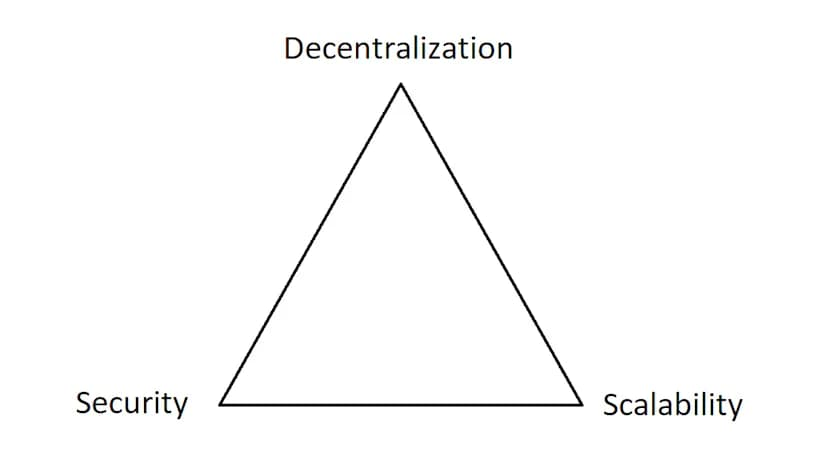
Ethereum optimises for security and decentralisation but is poor at scalability. Optimising for scalability by increasing the block gas limit comes at the cost of decentralisation. Ethereum is decentralised because the cost to run a node is minimal – you can run an Ethereum node on a Raspberry Pi. Increasing the block gas limit requires the nodes to verify transactions more quickly and store more data over time, raising the computational power and storage requirements to run a node. If the block gas limit is increased too much, you might no longer be able to run an Ethereum node on a Raspberry Pi, instead, maybe only large companies with access to enterprise-grade hardware can run nodes. This would mean less decentralisation.
Many blockchains have been willing to make these trade-offs. Binance Smart Chain is a blockchain that optimises scalability and security at the cost of decentralisation. Polkadot and Avalanche are blockchains that optimise scalability and decentralisation at the cost of security.
Ethereum has been unwilling to trade-off either its decentralisation or security and has instead focussed on developing scaling solutions capable of optimising for all three.
On-chain scaling with sharding
Another way to scale a blockchain on-chain is sharding. Sharding is the process of splitting a database horizontally to spread the load. In an Ethereum context, sharding could reduce network congestion and increase TPS by creating new chains, known as "shards". This would lighten the load for each validator who is no longer required to process the entirety of all transactions. This, in theory, achieves scalability without sacrificing security or decentralisation.
Ethereum's initial scaling roadmap proposed the creation of 64 shard chains, each with separate execution, state, smart contracts, balances, etc… However, this solution introduces unnecessary complexity, a worse user experience and new attack vectors. Additionally, shuffling validators between shards is very difficult.
Ethereum has abandoned the concept of sharded execution chains from its scaling roadmap in favour of Danksharding (named after its creator Dankrad Feist), where there is only one execution chain and the other Shards are for storing blobs of data only.
However, even Danksharding is incredibly complex. For now, Ethereum will focus on even simpler solutions such as Proto-Danksharding (named after its creators Protolambda and Dankrad Feist). Vitalik jokingly asked at ETHCC 2022 "should we cancel sharding?" after demonstrating how much TPS could be achieved with Proto-Danksharding alone. Proto-Danksharding stores blobs of data on Beacon nodes instead of separate shard chains and introduces a separate fee market for storing the blobs.
Sharding is its own complex topic which we won't cover in this research piece.
Off-chain scaling
Off-chain scaling is the concept of achieving scalability without modifying the main blockchain protocol and therefore without compromising the core protocol's scalability or security.
From now on we will refer to the main Ethereum blockchain / mainnet as Layer 1 (L1).
Off-chain scaling solutions include:
- State Channels
- Optimistic Rollups
- Zk-rollups
- Sidechains
- Validiums
- Plasma Chains
State Channels, Optimistic Rollups and Zk-rollups derive their security directly from the Layer 1 and will now be referred to as Layer 2 (L2) solutions.
Sidechains, Validiums and Plasma chains derive their security separately from the Layer 1 and whilst they are off-chain scaling solutions, they are not considered Layer 2 solutions.
State Channels and Plasma chains are mostly outdated scaling solutions as newer, better solutions have been developed. We won't focus much on these. The Raiden Network is an example of a State Channel on Ethereum and Omise Go was an example of a Plasma chain.
Sidechains were one of the first Ethereum scaling strategies and are still extremely popular today. Let's take a look at sidechains.
Sidechains
The most popular sidechain network is Polygon POS. Sidechains are completely separate blockchains connected to Ethereum via a 2-way bridge. Sidechains have their own consensus, block production, validators and design considerations. The purpose of sidechains is to help scale Ethereum and so their focus is on maximising throughput. Sidechains are willing to make the tradeoffs in decentralisation and security that Ethereum is not.
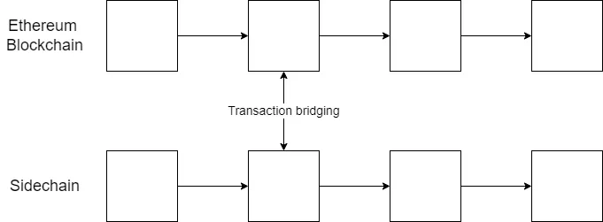
Sidechains put users in control of the tradeoff-making decision. If you value security and decentralisation, stick to mainnet, if you're willing to make the tradeoff, use the sidechain.
Sidechains are by design less secure than mainnet Ethereum. They might not be best for billion-dollar DeFi protocols but for low-value transactions, the popularity of Polygon POS has demonstrated that many users are willing to make the compromise in exchange for lower transaction fees. As one of the first scaling strategies, sidechain networks have had a first-mover advantage. Polygon POS is still the most popular and transacted on Ethereum scaling solution.
What makes sidechains less secure than Ethereum?
Polygon POS is a Proof of Stake blockchain. It relies on the assumption of an honest majority of validators, if this assumption is broken, the network is open to a series of attacks including double-spending. Polygon POS at the time of writing has $3 billion worth of Matic at stake securing the network across 100 validators. This is compared to Ethereum's beacon chain which has $21 billion worth of ETH securing the network across ~500,000 validators. The cost of a 51% attack on the Ethereum beacon chain is ~$10.7 billion and would require control of 250,000+ validators. The cost of a 51% attack on Polygon POS would cost ~$1.5 billion and would require control of as few as 6 out of the 100 current validators.
Polygon's staking implementation is done at the smart contract level. All $3 billion securing the Polygon chain is held within a single upgradable smart contract. Upgrade permissions to the contract are controlled by a 5 of 8 multisig wallet, four key holders are from Polygon with the other four key holders chosen by Polygon. In theory, Polygon would only need to collude with one external party or the 4 external parties would only need to collude with one keyholder from Polygon, to drain the network's entire security budget making off with at least $3 billion in the process.
Additionally, moving assets between Ethereum and Polygon POS requires cross-chain bridging which is notoriously insecure. Many of the largest blockchain hacks have been a result of vulnerabilities discovered in cross-chain bridges. If a vulnerability was exploited on the Polygon POS bridge any assets you had bridged between the networks could be lost.
All of the above security compromises are by design in return for an increase in TPS. Polygon has received much criticism for the security tradeoff choices they have made. However, Polygon POS is not the only Ethereum scaling solution that Polygon offers. Polygon has utilised the capital they have obtained from their success with the Polygon POS chain to push forward the entire Ethereum scaling ecosystem including the development of the first zkEVM rollups. The Ethereum scaling ecosystem and rollups would not be as advanced as they are today without Polygon. Polygon gives users the choice to decide for themselves which scaling solution to use based on their judgement of how much security they are willing to trade-off.
But what if scaling could be achieved without compromising on security? Enter rollups.
The Rollups Concept
As we saw with sidechains, as soon as you take block production and consensus of the chain's state off of Ethereum, the sidechain needs to rely on its own security model which is almost always going to be less secure than Ethereum.
But what if your new blockchain and each of its blocks were contained inside of Ethereum and validated by Ethereum's L1 validators with the full strength of Ethereum's $21 billion security budget, whilst still moving execution of transactions within blocks off-chain? This is rollups.
Most blockchains handle four key functions:
- Data availability – making sure that the transaction data is available to users and block producers (consensus nodes).
- Consensus – ensuring nodes agree on the order of transactions included in a block.
- Settlement – where execution layers verify proofs, resolve disputes, and transfer assets between execution layers.
- Execution – the layer where applications live and state is updated.
Ethereum is considered a monolithic blockchain. An Ethereum client like (pre-merge) Geth will handle all four key functions of the Ethereum blockchain. Rollups are modular blockchains that split the four key blockchain functions up between different blockchains depending on their implementations. We'll look at smart contract rollups.
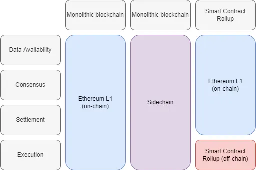
Prerequisite Knowledge:
Rollups rely heavily on the concept of compressing transactions. To understand rollups, we need to understand how an ETH L1 transaction looks. Below, we'll break down a randomly chosen ETH transfer transaction. If you know how to do this, you can skip to the next section.
The anatomy of an ETH transaction
Let's break down the following real transaction from the Ethereum blockchain. This transaction was chosen at random. This is a simple ETH transfer from one address to another. You can see the chosen transaction on Etherscan here:
https://etherscan.io/tx/0xe9ab7969753ac82c2135d57059989fd74b1bbc226142f98a66106bcbf2886596
First, we need to gather the raw transaction data for this transaction. This can be done for this transaction by providing the transaction hash to Etherscan's API using the following URL:
https://etherscan.io/getRawTx?tx=0xe9ab7969753ac82c2135d57059989fd74b1bbc226142f98a66106bcbf2886596
The raw transaction data (stored as hexadecimal) for this transaction is:
0xf86c8085053724e0008252089476a031c079a0482b573eb53db867f3991d564d7f881c3334845e8000008026a01165e2adb7d5a1c3b26d872e0314019220139f3b42c2f10029e818e9654bc8b2a0337b4110eb2f65bc2afea40b36740ae6b162a68afe9dcd711fc8d46dfdf947f2
We'll convert it to JSON format to make it more human-readable as below:
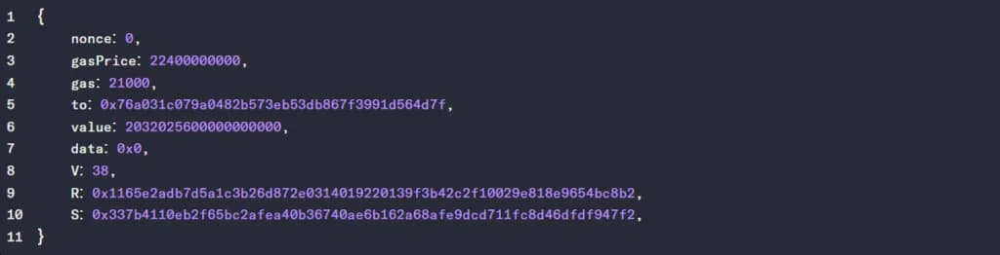
These transaction parameters can be explained as follows:
- nonce – A transaction counter that reflects how many transactions this address has previously sent. The nonce value is required to prevent replay attacks.
- gasPrice – the amount of ether (in wei) willing to be paid for each unit of gas
- gas – the maximum gas the originator is willing to buy for this transaction.
- to – the recipient of the transaction.
- value – the amount of ETH to transfer from sender to recipient (in wei).
- data – an optional field to include arbitrary data. 0x0 means no data.
- V, R & S – the V, R & S fields form the signature and are generated when the sender’s private key signs the transaction and confirms the sender has authorised the transaction.
- R & S – together form the signature. Sig = (r , s).
- V – the recovery identifier. Multiple (r, s) values on the elliptic curve can be derived without it. Also specifies the chain ID to prevent replay attacks on other chains. Calculated as CHAIN_ID*2+36. A value of 38 is used for Ethereum transactions (ETH mainnet CHAIN_ID = 1).
For the sake of demonstration, we'll convert from hexadecimal to binary to break the transaction down into its individual components and measure its size (you can use any hexadecimal to binary converter):
11111000011011001000000010000101000001010011011100100100111000000000000010000010010100100000100010010100011101101010000000110001110000000111100110100000010010000010101101010111001111101011010100111101101110000110011111110011100110010001110101011001001101011111111000100000011100001100110011010010000100010111101000000000000000000000010000000001001101010000000010001011001011110001010101101101101111101010110100001110000111011001001101101100001110010111000000011000101000000001100100100010000001001110011111001110110100001011000010111100010000000000101001111010000001100011101001011001010100101111001000101100101010000000110011011110110100000100010000111010110010111101100101101111000010101111111010100100000010110011011001110100000010101110011010110001011000101010011010001010111111101001110111001101011100010001111111001000110101000110110111111101111110010100011111110010
This transaction is 880 bits or 110 bytes which is approximately the size of any standard ETH transfer transaction. The binary is encoded using Recursive Length Prefix (RLP) serialisation. You can use an RLP decoder to decode the transaction, however, we will decode the binary step by step to show the process below. If you don't care about understanding the breakdown you can skip to the Size Summary Table.
The rough rules for RLP decoding Ethereum transactions are:
- The first two bytes of an RLP encoded transaction are put there by the RLP encoder to assist in decoding the transaction.
- The third byte will specify the size (in bytes) of the next value. The size is determined by taking the decimal value of the third byte and subtracting 128. For this transaction, the third byte equals 128 meaning that the nonce value is 128 – 128 = zero bytes or just 0.
- The fourth byte specifies the size (in bytes) of the gas price. For this transaction, the fourth byte equals 133, meaning 133 – 128 = 5. Thus the gas price takes up the next 5 bytes worth of data.
- The above process is repeated for the transaction as follows below.
- If the value is only 1 byte long (e.g. V in our transaction), no size specifier precedes the value. You can know if the value is only 1 byte long as its value will be less than 128.
- RLP encoded transactions are of the order: nonce, gasPrice, gas, to, value, data, V, R, S.
| BYTES | FIELD SIZE | FIELD | VALUE |
| 1 | 11111000 | 248 | Value ≥ 248 defines payload as long list |
| 2 | 01101100 | 108 (bytes) | Specifies the size of the payload minus the 2 RLP headers |
| 3 | 10000000 | 0 (bytes) | Specifies the size of the nonce |
| 4 | 10000101 | 5 (bytes) | Specifies the size of the gas price |
| 5 – 9 | 0000010100110111001001001110000000000000 | 22400000000 (wei) | Transaction gas price value |
| 10 | 10000010 | 2 (bytes) | Specifies the size of the Gas value |
| 11 – 12 | 0101001000001000 | 21000 | Transaction Gas Value |
| 13 | 10010100 | 20 (bytes) | Specifies the size of the to field |
| 14 – 33 | 0111011010100000001100011100000001111001101000000100100000101011010101110011111010110101001111011011100001100111111100111001100100011101010101100100110101111111 | 0x76A031C079A0482B573EB53Db867F3991D564d7f | The address to send the ETH to |
| 34 | 10001000 | 8 (bytes) | Specifies the size of the value field |
| 35 – 42 | 0001110000110011001101001000010001011110100000000000000000000000 | 2032025600000000000 (wei) | The amount of ETH in wei to be sent |
| 43 | 10000000 | 0 (bytes) | Specifies the size of the data field |
| 44 | 00100110 | 38 | Value of V in signature |
| 45 | 10100000 | 32 (bytes) | Specifies the size of the R field in bytes |
| 46 – 77 | 0001000101100101111000101010110110110111110101011010000111000011101100100110110110000111001011100000001100010100000000011001001000100000000100111001111100111011010000101100001011110001000000000010100111101000000110001110100101100101010010111100100010110010 | 0x1165e2adb7d5a1c3b26d872e0314019220139f3b42c2f10029e818e9654bc8b2 | Value of R in signature |
| 78 | 10100000 | 32 (bytes) | Specifies the value of S field in bytes |
| 79 – 110 | 0011001101111011010000010001000011101011001011110110010110111100001010101111111010100100000010110011011001110100000010101110011010110001011000101010011010001010111111101001110111001101011100010001111111001000110101000110110111111101111110010100011111110010 | 0x337b4110eb2f65bc2afea40b36740ae6b162a68afe9dcd711fc8d46dfdf947f2 | Value of S in signature |
We can summarise the size of each value, including its RLP encoding component, of the transaction above as follows:
Size Summary Table
| PARAMETER | SIZE (BYTES) |
| RLP Header | 2 |
| Nonce | 1 |
| Gas Price | 6 |
| Gas | 3 |
| To | 21 |
| Value | 9 |
| Data | 1 |
| Signature (V + R + S) | 67 |
| TOTAL | 110 BYTES |
Understanding breaking down an Ethereum transaction is important as generally the larger the transaction size the more expensive it is to execute on the Ethereum network. Rollups can achieve the same Ethereum transaction whilst only sending ~12 bytes of data to the Ethereum network allowing for much cheaper transactions. We'll find out how this is possible later on.
Smart Contract Rollups
Rollups are blockchains inside of a blockchain – hence the name rollup. Rollups store blocks for their blockchain within smart contracts on the L1. There are two types of smart contract rollups:
- Optimistic Rollups and
- Zk-rollups
We'll focus in this article on Optimistic Rollups. Each rollup block contains transaction data for the transactions executed on the rollup chain. However, the transaction data is only stored as callData within the rollup smart contract on Ethereum, rather than being executed like a regular transaction. Execution of transactions is done on the rollup chain according to the transactions defined in the rollup blocks on Ethereum.
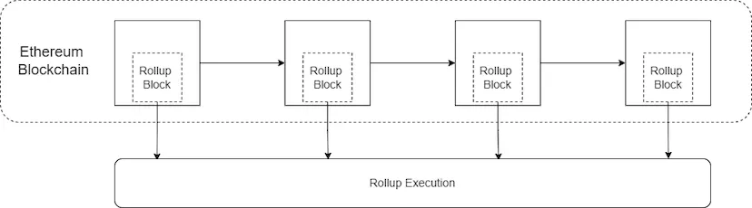
The minimum cost to conduct a transaction on the Ethereum blockchain is set at the protocol level as 21,000 units of gas ("the base gas fee"). Even the simplest of transactions, an ETH transfer, will cost 21,000 units of gas. However, storing bytes of data as callData on the Ethereum blockchain only costs:
- 16 units of gas per byte of non-zero data
- 4 units of gas per byte of zero data (i.e. 00000000)
As we recall, a simple ETH transfer is ~110 bytes of data. Storing a single ETH transfer transaction as callData rather than executing it only costs 110 * 16 = ~1,760 units of gas.
To create a rollup block with the above transaction, the base gas fee of 21,000 units of gas still needs to be paid, as writing the callData to the blockchain is executing a transaction. The rollup can produce a block with only one transaction in it, however, this will cost a total of 21,000 + ~1,760 = ~22,760 units of gas which is more expensive than just executing the transaction on Ethereum mainnet. However, most rollup blocks will contain more than 1 transaction per block and the genius of rollups is that the 21,000 gas base fee only needs to be paid once per block.
A rollup block with just 100 ETH transfer transactions would cost a total of 21,000 + ((110 * 16) * 100) = ~197,000 units of gas or just ~1,970 units of gas per transaction. Executing each transfer on mainnet would cost 21,000 * 100 = 2,100,000 units of gas in total or 21,000 gas per transfer. A basic rollup delivers a ~10x increase in TPS on ETH transfer transactions (equivalent to a 90% reduction in fees) whilst still relying on the full security and decentralisation of the L1.
How to achieve a 100x with rollups
Rollups can achieve much more than a 10x increase in TPS. The table below shows a comparison between storing an ETH transfer in a basic rollup vs a compressed rollup.
| PARAMETER | BASIC ROLLUP (BYTES) | COMPRESSED ROLLUP (BYTES) |
| RLP Header | 2 | 0 |
| Nonce | 1 | 0 |
| Gas Price | 6 | 0.5 |
| Gas | 3 | 0.5 |
| To | 21 | 4 |
| Value | 9 | ~3 |
| Data | 1 | 0 |
| Signature (V + R + S) | 67 | ~0.5 |
| From | 0 | 4 |
| TOTAL | 110 BYTES | ~12.5 BYTES |
If we don't need to execute transactions on L1, we can remove redundant data and apply some clever compression tricks. We'll outline a theoretical transaction compression strategy originally proposed by Vitalik below.
No RLP – Rollups don't need RLP encoding and can save 10 bytes. RLP transactions 'waste' two bytes with the RLP header and a byte specifying the size for each transaction parameter (even for parameters that don't exist). This can reduce the transaction size to ~100 bytes.
Omitting the nonce – Rollup transactions don't need a nonce. As the nonce is incremented by 1 for each transaction, it can be recomputed when needed for execution by looking at the prior state of the blockchain. Our transaction doesn't save any data by nonce omission as its nonce value is 0 (bytes). Any transaction with a nonce value greater than 0 would save data.
Gas Price Simplification – Gas prices are stored in wei and are generally large numbers. In our transaction, it took 5 bytes of data to store a gas price of 22400000000. Instead, we could set gas based on a fixed range of prices. For example, choosing a Gas Price as 16 consecutive powers of two. By limiting Gas Price to only 16 possible values, you could store the gas price for only 0.5 bytes or less. This would reduce the transaction size to ~95.5 bytes.
Gas Simplification – As above, this field could be limited to a small range of options. This saves a further 1.5 bytes, reducing the transaction size to ~94 bytes.
Replace address with an index – The address field takes up a lot of data (20 bytes). Instead of storing the full address, rollups can store an index for a mapping of addresses stored elsewhere. E.g. send to the 1034th address in the mapping. By only storing the address index in the transaction, we can reduce the to field to ~4 bytes. The transaction is now ~78 bytes.
Value in Scientific Notation – The value field in an Ethereum transaction is priced in wei, making it a large number. We cannot omit the value field or reduce it to a fixed set of values. However, we can write it in scientific notation instead of wei to save on data. Using scientific notation will save a further ~5 bytes bringing the total transaction size down to ~73 bytes.
Omit Data Field – The data field does not apply to an ETH transfer so it can be emitted entirely (however, it would be required on more complex transactions). This field was already omitted on our mainnet transaction, so no savings are recorded here.
Replace Individual Signature with BLS Aggregate Signature – The signature is the largest component of an Ethereum transaction. In our transaction, it took 65 bytes (59% of the transaction). Instead of storing each signature, we can store a BLS aggregate signature for every ~100 transactions. A BLS aggregate signature can be checked against the entire set of messages and senders to ensure validity. A BLS aggregate signature varies in size (depending on the protocol) between 32 – 96 bytes. Split across ~100 transactions, a BLS signature only takes ~0.5 bytes per transaction reducing our theoretical transaction size to ~8.5 bytes.
Many rollup chains (and even L1s) are prioritising supporting BLS aggregate signatures given it can have a major impact on reducing transaction size and therefore increasing throughput.
Add back From Field – On a regular transaction, the from field can be derived from the signature and is not required. However, with BLS aggregate signatures, the from field can no longer be derived for each transaction. As with the to field, we can add the from field as an index to a mapping. This adds ~4 bytes to our transaction bringing the total to ~12.5 bytes.
Data compression and superior encoding allow for a further ~10x increase in throughput compared to a basic rollup for a total ~100x increase in TPS on ETH transfers (equivalent to a 99% reduction in fees) whilst still relying on the full security and decentralisation of the L1.
To store a compressed rollup transaction as callData on mainnet Ethereum will cost 16 * 12.5 = ~200 units of gas. In a rollup block with 100 compressed rollup transactions, the total gas paid is 21,000 + ((16 * 12.5) * 100) = ~41,000 units of gas total or ~410 units of gas per transaction.
Most rollup solutions today apply none or some of these compression techniques meaning rollup fees are likely to reduce significantly once these techniques have been implemented.
Rollup blocks
Ethereum Block Format
The following diagram represents the structure of a (pre-merge) block on the Ethereum blockchain:
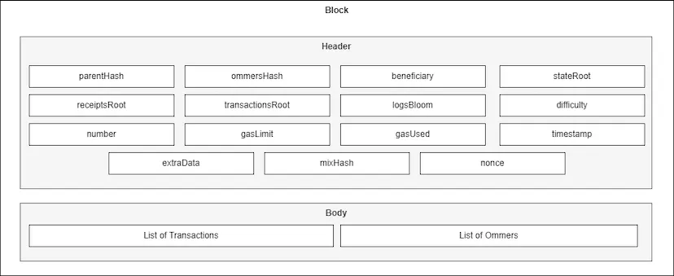
You will immediately notice that none of the header fields from Ethereum blocks are present in rollup blocks. The rollup doesn't care about things like difficulty and beneficiaries because the rollup outsources consensus and security-related activities to the L1. The rollup block simply needs to store the transactions and some details about how to interpret the transactions.
- Function Signature – required by Ethereum to specify which smart contract function to call. This will always specify to call the function appendSequencerBatch().
- Starting TX Index – A parameter required by the appendSequencerBatch() function. Specifies the index of the first transaction in this block. Equal to the number of transactions on the chain to date plus 1.
- # of Elements – A parameter required by the appendSequencerBatch() function. The total number of transactions we expect in the block.
- List of Contexts – A parameter required by the appendSequencerBatch() function. An array containing each of the contexts in the block.
- # of transactions sent on L2 – number of L2 transactions in the context.
- # of deposits – the number of deposit transactions on the L1 (to transfer funds from L1 to L2).
- Timestamp – the time the context was created
- L1 Block Number – the L1 block number when the context was created.
- Transaction Data – All the raw transactions from all the contexts in the block.
The original implementation of Optimism was a basic rollup with no data compression. All transactions were stored as RLP encoded transactions as they would be if sent to the L1 for execution. As we saw above even without compression, rollups can offer ~10x reduction in fees. It should be noted that Optimism will soon upgrade to Bedrock which will modify its architecture and improve scalability. For this research piece, we will focus on Optimism's current implementation.
Breaking down a rollup block with an example
You can see an example of an Optimism block posted to Ethereum here:
https://etherscan.io/tx/0xf5a2dd9d0815ad4dcee00063ff8f8f3fd44b3bd8ffc1f7f6c7f7f0b4b086c5a7/advanced
(click "see more" and look at the "Input Data" field to see the raw block data). This Optimism block is 41,440 bytes in size. This is too big to break down every transaction by hand, but we can outline the general structure of the block below.
| BYTES | FIELD SIZE | FIELD | VALUE |
| 0 – 3 | 4 | Function Signature | appendSequencerBatch() |
| 4 – 8 | 4 | Starting Tx Index | 4025992 |
| 9 – 11 | 3 | Elements to append | 89 |
| 12 – 14 | 3 | Batch Contexts | 15 |
| Context 0 | |||
| 15 – 17 | 3 | Transactions sent to L2 | 8 |
| 18 – 20 | 3 | Deposits in context | 0 |
| 21 – 25 | 5 | Timestamp | 1646146436 |
| 26 – 30 | 5 | L1 Block Number | 14301739 |
| … | |||
| Context 15 | |||
| 239 – 241 | 3 | Transactions sent to L2 | 4 |
| 242 – 244 | 3 | Deposits in context | 0 |
| 245 – 249 | 5 | Timestamp | 1646146565 |
| 250 – 254 | 5 | L1 Block Number | 14301750 |
| Transaction 1 | |||
| 255 – 257 | 3 | Size of transaction (bytes) | 366 |
| 258 – 623 | 366 | Transaction Data | 0xF9016B82… |
| … | |||
| Transaction 85 | |||
| 41,266 – 41,268 | 3 | Size of transaction (bytes) | 171 |
| 41,269 – 41,439 | 3 | Transaction data | 0xF8A981AC… |
Taking a closer look at the first transaction in this block, located at bytes 258 – 623, we can see that it is stored in the block as a regular Ethereum RLP encoded transaction as displayed below:
0xF9016B8202B9830F424083E4E1C09482AC2CE43E33683C58BE4CDC40975E73AA50F45980B90104B6B1B6C30000000000000000000000007161C3416E08ABAA5CD38E68D9A28E43A694E03700000000000000000000000000000000000000000000000000000000000000000000000000000000000000000000000000000000000000000000000000000000000000000000000000000000000000000000000000000000000056BC75E2D6310000000000000000000000000000000000000000000000000000000000000000000000FFFFFFFFFFFFFFFFFFFFFFFFFFFFFFFFFFFFFFFFFFFFFFFFFFFFFFFFFFFFFFFF00000000000000000000000000000000000000000000000000000000000000006272656E746F780000000000000000000000000000000000000000000000000038A0A0D921F60AE6EDF7A665162DECBAE0A08807AF8B26C4D6E8AA71BC0263074D78A046EFD37249D1043DCFAE551D9D58FA608D4D6744A6D47E8A1A11D268314D2BD3
You can decode this transaction like any other RLP encoded ETH transaction. You can also see this transaction on the Optimism Explorer here:
https://optimistic.etherscan.io/tx/4025992
Transaction data takes up 41,186 of the 41,440 bytes of data in this block (99%), the other 1% is taken up by the function signature, starting TX index, # of elements to append and batch context data. With 85 transactions in the block, this other data adds ~3 bytes / ~48 units of gas per transaction. So why do we need it?
The function signature is required by the L1 to interact with the rollup contract. The starting TX index and # of elements to append are placed there to ensure the validity of the blocks being produced. If the starting TX index doesn't equal the index of the last transaction in the last block plus 1 or if the number of transactions in this block doesn't equal the # of elements to append value, we know the block has been produced incorrectly and so we should ignore it.
Contexts manage the difference in block time on the L1 (every 12s) vs the L2 (every ~6 minutes) and are necessary for a Sequencer to know if an L1 to L2 deposit transaction should be executed before or after an L2 transaction. Each time a new L1 block is created, we create a new context within the rollup block which stores the new L1 block number. All transactions executed whilst that L1 block was the highest are associated with that context. Once a new L1 block is produced, a new context is created and transactions at that time are associated with it.
Upgrading Rollup Blocks
In March 2022, Optimism started allowing for the compression of raw transaction data in its blocks to reduce the size and fees. However, its existing block structure included no parameters capable of specifying whether the transactions in that block were compressed or not.
Optimism was forced to repurpose the timestamp and L1 block number fields from the first context of the block. In the first context, if the timestamp is set to 0, then the L1 block number field should be interpreted as a transaction type identifier rather than the L1 block number. Any contexts where the timestamp field is set to 0 should also have 0 L2 transactions and 0 deposit transactions. As this is no longer a regular context and we can't determine the L1 block number for this context, we should not include any transactions in it.
Currently, one modified transaction type exists, type 0. Transaction types 0 are compressed raw Ethereum transactions using the zlib compression algorithm. When the timestamp and L1 block number of the first context are set to 0, all transactions in the block are compressed using zlib.
zlib compression is applied by taking the entire transaction data set and compressing them as a group before posting the compressed data to the rollup block. zlib compression reduces the size of a block's worth of transactions by ~40%.
In theory, a standard Ethereum transaction may be compressed from 110 bytes to ~66 bytes representing a ~16x reduction in transaction fees compared to the L1. To read transactions from an Optimism block with compressed transactions, we would need first to decompress the entire transaction set and then decode using RLP. In the future, new transaction types will be added making storage even more efficient.
L2 Execution
Rollup blockchains outsource data availability, consensus and settlement to the L1 blockchain, however, execution is performed off-chain on the rollup. Moving execution off-chain is how transaction fees are reduced but what does moving execution off-chain mean?
How is execution performed on L1?
To understand how rollups do execution off-chain, we'll first look at on-chain execution. Execution is the act of applying a transaction to an existing state to produce a new state. You cannot perform execution without both an existing state and a transaction. We'll look at a simple example. In this example, Transaction T is executed against State 1 to produce State 2:
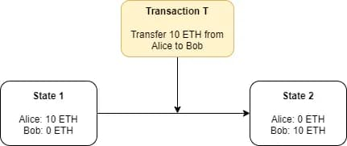
In the case of Ethereum, all L1 nodes will execute transactions included in each block on the blockchain. If we refer back to our L1 block diagram, we can find the transactions but we'll notice that the state is not stored anywhere in the block. So where do we get the state from?
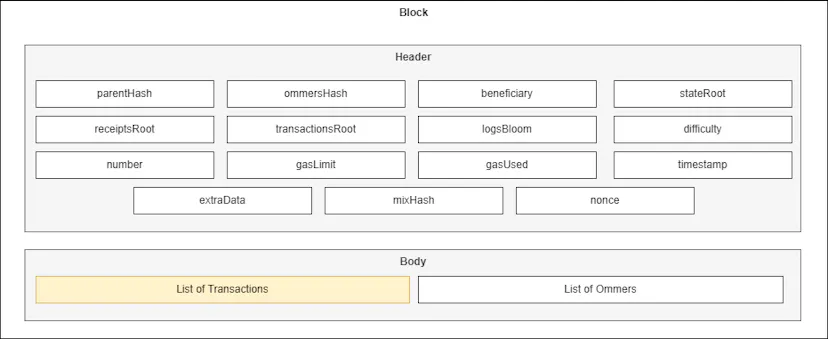
If we know the starting state of the blockchain, all the transactions and the order they came in, we can recalculate the blockchain state at any time. Therefore we don't need to store the state in blocks. However, we need to know the Ethereum starting (genesis) state. The Ethereum genesis state comes included with any Ethereum L1 (execution) node software. All L1 nodes must start with the same state to ensure they can follow and validate the correct chain. If you're interested in what the genesis state looks like, you can find a copy here:
https://github.com/ethereum/ethereumj/blob/develop/ethereumj-core/src/main/resources/genesis/frontier.json
Given that Ethereum performed an Initial Coin Offering (ICO) for the blockchain before the network launched, Ether had to be allocated to ICO participants in the genesis state. There are a total of 8,893 allocations of Ether applied to various addresses in the genesis state.
You can download any L1 execution client (e.g. Geth) which will come pre-packaged with the genesis state. Once started, the node will begin to download blocks from the blockchain and apply the transactions, in order, to the state. Each time a transaction is executed, a new state is generated. The state is stored locally within a LevelDB database. L1 nodes need to store all the blocks from the blockchain plus the state generated by executing the transactions. Given that to calculate new state correctly we only need to know the current state and nothing prior, we can delete ("prune") all of the old state when new state is created to save disk space. Storing just the blockchain takes ~650GB of disk space, whereas storing all historical state since genesis takes ~13TB of disk space! Hence, the need for pruning.
What does L1 state look like?
L1 state is stored within a LevelDB database on the node device in the form of a series of Merkle Patricia Tries, a type of data structure. There are 4 Merke Patricia Tries:
- State Trie – stores the global state of the blockchain.
- Storage Trie – stores any data stored within smart contracts.
- Transactions Trie – stores transactions for more efficient lookup and query.
- Receipts Trie – stores information about executed transactions
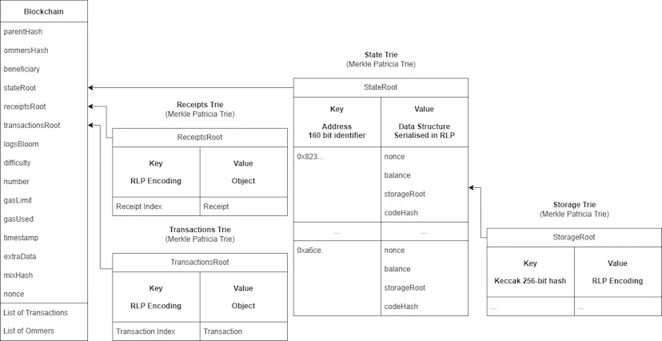
The State Trie stores, for every address that has ever executed a transaction on the blockchain:
- Nonce – the number of transactions the address has sent
- Balance – the amount of ETH the account has
- StorageRoot – a hash of the account’s Storage Trie
- CodeHash – a hash of the smart contract code deployed at this address
The StorageRoot and CodeHash are only utilised on smart contract accounts. The CodeHash can never be updated. Each smart contract deployed on Ethereum has its own Storage Trie.The Storage Trie is where that smart contract can store contract-related data. The StorageRoot is calculated by generating a hash of the entire Storage Trie for the associated smart contract at a point in time and represents a summary of all the data stored in the smart contract.
Similarly to the StorageRoot, we can calculate a StateRoot which is a hash of all the data for all the accounts within the State Trie. This StateRoot represents a summary of the entire state of the Ethereum blockchain at a given time. You might recall from the L1 block diagram that, whilst we don't store state itself on the blockchain, we do store a StateRoot in every block. The StateRoot included in a block represents a hash of the state of the blockchain that the L1 Block Producer generated after executing all the transactions in that block against the last valid state.
When a Block Producer proposes a new block to the network, all L1 nodes will download the new block and execute its transactions against their local state. Once a new state has been produced, each L1 node will calculate a StateRoot. If the StateRoot that it calculated is not the same as the StateRoot included by the Block Producer, the L1 node will discard the block and consider it invalid. As for the Block Producer to calculate a different StateRoot, it either didn't start with the last valid state of the chain or executed the transactions incorrectly / maliciously.
Execution Example
Let's apply a state execution to our example transaction from earlier, found on Etherscan here:
https://etherscan.io/tx/0xe9ab7969753ac82c2135d57059989fd74b1bbc226142f98a66106bcbf2886596
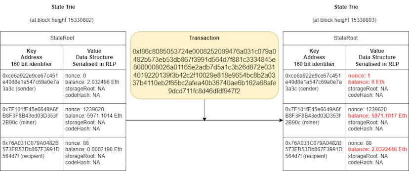
When our L1 node downloads block 15330803, it will find in the List of Transactions our raw transaction which looks like this:
0xf86c8085053724e0008252089476a031c079a0482b573eb53db867f3991d564d7f881c3334845e8000008026a01165e2adb7d5a1c3b26d872e0314019220139f3b42c2f10029e818e9654bc8b2a0337b4110eb2f65bc2afea40b36740ae6b162a68afe9dcd711fc8d46dfdf947f2
Our node will decode the RLP format and perform checks like ensuring the transaction format is valid and the signature is genuine. It will then attempt to execute the transaction. Executing this transaction (assuming enough gas is provided) requires making four updates to the State Trie:
- modifying the balance of the sender;
- modifying the balance of the recipient
- modifying the balance of the miner/block producer (who will receive the tip); and
- increment the sender's nonce
With the new state, we can calculate a new StateRoot. Although we can't see the state of any other nodes, we can be certain that any node that calculates the same StateRoot as our node, also has the same state.
Execution on L1 is secure, but expensive
Execution on the L1 is secure because every node independently executes every transaction. However, this requires computational expenditure by nodes and storage capabilities to store the blockchain and state. To ensure that consumer-grade nodes can keep up with downloading new blocks and executing all transactions every 12s, we impose the block gas limit which limits the amount of computation a node needs to perform for each block. The block gas limit also limits the size growth of the blockchain ensuring it can be stored on consumer hardware. This limit is critical for decentralisation but is precisely what makes the L1 expensive.
How is execution performed on L2?
When a rollup block is submitted to the L1, it may contain 100+ transactions, but only one transaction is executed by L1 nodes, a transaction to store the contents of the rollup block in the L1 state (Storage Trie of a contract address). Therefore computation is limited at the L1 level and thus gas costs are reduced. So who does execute the rollup transactions then? L2 nodes!
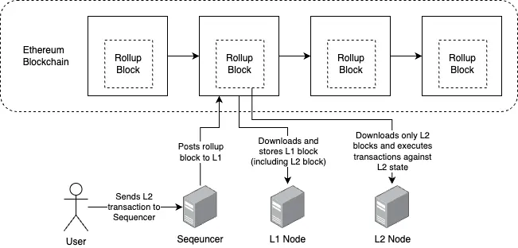
Optimism L2 nodes are a vanilla fork of Geth with the only difference being that they have an extra component, the data indexer, which sources L2 blocks from the rollup contract rather than other L1 nodes. State is stored in the same Merkle Patricia Trie structures as on L1 nodes. The process of executing a transaction on an Optimism node is the same as on an L1 node, the Optimism node loads the current Optimism state, executes the transaction against that state, and then records any resulting state changes.
On the L1, if a node detects an invalid block, it can disregard it but it's not that simple on the L2 where blocks are immutably stored on the L1. What do we do when L2 nodes detect that invalid blocks have been posted to the L1 blockchain? We use fraud proofs to correct them.
Fraud Proofs
What we've described above is Ethereum providing a Data Availability Service (DAS) for a rollup blockchain. The Ethereum blockchain uses its full $21 billion security budget to immutably store transaction data for the rollup. However, the rollup smart contract does not check the contents of the transaction data to ensure it's valid, after all, we're trying to do as little computation as we can on the L1 to save on fees. In theory, you could send whatever data you want to the rollup contract, how do we know the data in the rollup blocks on the L1 is valid? Enter fraud proofs.
So far when inspecting Optimism's rollup blocks we've only looked at the blocks that contain transaction data. These blocks are held within a smart contract on Ethereum called the Canonical Transaction Chain (CTC) smart contract. However, when a block is submitted, the L2 block producer (the Sequencer) will also submit another block to a separate smart contract. It will submit a block of StateRoots to the State Commitment Chain (SCC) smart contract.
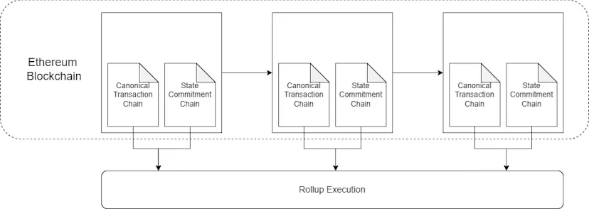
You can see an example of an Optimism block of State Roots posted to Ethereum here:
https://etherscan.io/tx/0x8fd6f8f2cade0e08c2cfbcf1f7ead836a7565d91f3ebd495630af0d7a0bd705e
(click "see more" and look at the "Input Data" field to see the raw state root block data).
This Optimism block of StateRoots is 31,172 bytes in size. This is too big to break down every State Root by hand, but we can outline the general structure of the block below.
| BYTES | FIELD SIZE | FIELD | VALUE |
| 0 – 3 | 4 | Function Signature | appendSequencerBatch() |
| 4 – 35 | 32 | Batch Index | 64 |
| 36 – 67 | 32 | Previous Total Elements | 21762891 |
| 68 – 99 | 32 | # of State Roots | 971 |
| 100 – 131 | 32 | State Root 1 | 0xEAF4C5625571… |
| … | |||
| 31,141 – 31,172 | 32 | State Root 971 | 0x74D920B9C0B… |
An important distinction between L1 blocks and State Commitment Chain blocks is that the L1 only publishes a single StateRoot representing the state once all transactions in the block have been executed. Whereas the State Commitment Chain contains a StateRoot for each transaction executed on the L2.
Can an invalid transaction make its way into a rollup block?
Yes. The rollup protocol makes no assumptions as to whether the data in the rollup blocks posted to the L1 are valid. An honest Sequencer will make its best effort to discard invalid transactions before posting its rollup block to the L1. Invalid transactions could mean forged transactions with invalid signatures or it could simply mean garbage data that doesn't reflect any actual transaction. However, nothing is stopping a Sequencer from, intentionally or unintentionally, posting invalid transactions to an L2 rollup block. Invalid transactions are bad because they are a waste of gas but importantly they do not affect the integrity of the rollup.
When an L2 node downloads a rollup block and executes all its transactions, if it discovers any invalid transactions (malicious or garbage data) it will simply discard those transactions at that point, ensuring they did not have an impact on the state of the rollup. The node will calculate its own StateRoot for each valid transaction in the block. The node can then compare its StateRoots for each transaction against the StateRoots published by the Sequencer on the State Commitment Chain to be sure that both parties executed the transactions correctly.
What happens if a Sequencer publishes an invalid StateRoot to the L1?
The StateRoots published to the State Commitment Chain on the L1 are meant to act as a source of truth for the correct state of the L2 chain. The L1 contract responsible for withdrawals from the L2 to the L1 assumes (after a time delay) that these StateRoots represent the valid state of the L2 and allows or denies withdrawals from the L2 based on these StateRoots.
Let's consider an example where a malicious Sequencer publishes a malicious transaction (T4) that steals 1000 ETH from Alice's account and transfers the ETH to their own account, despite Alice never authorising such a transaction. The Sequencer would also have to publish a StateRoot that represents a state where Alice's account balance has been reduced by 1000 ETH and theirs has been increased by the same. Given that a StateRoot's validity requires that its ancestors are also valid, all future StateRoots will also now be invalid.
Honest L2 nodes when executing transaction T4 will not calculate the same malicious StateRoot as has been posted to the L1 chain as they will find transaction T4 malicious and invalid.
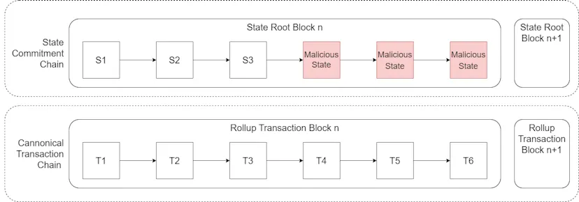
Regardless of what L2 nodes think, if the invalid StateRoot remains on the L1 State Commitment Chain, the L1 will assume that this StateRoot is a reflection of the valid state of the rollup and allow the Sequencer to maliciously withdraw the 1000 stolen ETH from the rollup to the L1. Once funds have been withdrawn, there is nothing the rollup can do to recover the funds.
We cannot stop the Sequencer from posting a malicious StateRoot in the first place but we have to be able to update the malicious StateRoot on the L1 to correct it to the valid StateRoot before the malicious Sequencer has the opportunity to maliciously withdraw funds.
How do we correct a malicious StateRoot?
So long as there is at least one honest node in the L2 network, we can ensure the integrity of the rollup and correct malicious StateRoots. This is known as the honest minority assumption or that the threshold whereby the network can repel malicious nodes is equal to n-1 where n is the number of nodes in the network (i.e. in a rollup blockchain with 1000 nodes where 999 of those nodes are malicious, the one honest node can still keep the entire network honest and secure).
Honest minority chains are a big difference compared to most L1 blockchains. Most L1s can only ensure the integrity of their networks so long as an honest majority (>50%) of the nodes / miners / validators exists. Therefore L2 blockchains can be much more centralised than L1 blockchains and still ensure the same level of security so long as there is at least 1 honest node and the L1 that blocks are being rolled up to is itself sufficiently decentralised.
If an honest node believes it has discovered an invalid StateRoot, it can send a transaction to the L1 stating that "applying transaction T4 correctly to State S3 does not result in Malicious State (because the transaction is invalid) and therefore all StateRoots after S3 should be deleted." So how does that happen?
If we assume that the L1 is secure, then we can guarantee if we provide it with the correct state before the disputed transaction and the disputed transaction itself, that the L1 will always calculate the valid (non-malicious) StateRoot for that transaction. We can use this knowledge to force the L1 to delete any StateRoots that are proven invalid.
Optimism includes three smart contracts on the L1 to verify fraud proofs:
- Fraud Verifier Contract – A contract that coordinates the fraud proof verification process. If a fraud proof can successfully prove that a StateRoot is invalid, the Fraud Verifier Contract has permission to delete that StateRoot on the L1 and all StateRoots after it.
- State Transition Contract – A new iteration of this contract gets deployed each time a new fraud proof is submitted. The purpose of this contract is to act as a sandbox environment to execute the disputed transaction and calculate its valid State Root.
- State Manager Contract – A new iteration of this contract gets deployed each time a new fraud proof is submitted. The purpose of this contract is to store the necessary state to successfully execute the disputed transaction.
Step 1 – An honest node calls the Fraud Verifier contract on the L1 initiating the fraud verification process. The honest node must supply in its contract call:
- The last StateRoot in the chain that it believes is valid (in our example S3)
- The invalid transaction that results in the malicious state (in our example T4)
The honest node can only dispute a single transaction and the associated StateRoot for that transaction. You cannot dispute an entire rollup block.
The Fraud Verifier contract will then deploy two fresh versions of the State Transitioner contract and State Manager contract to arbitrate the dispute.
Step 2 – In step 1 we provided the L1 with the last valid StateRoot (S3) and the disputed transaction (T4) but the L1 needs the actual state of S3 to correctly calculate the valid StateRoot of applying T4 to S3.
The honest node must upload the state necessary to execute transaction T4 at state S3 to the State Manager contract. The State Manager does not need the entire state of the blockchain but does need all state affected by transaction T4. This means uploading the nonce, balance, StorageRoot, CodeHash and entire State Tries for all accounts affected by transaction T4.
For example, if transaction T4 is the illegal transfer of an ERC20 token. The honest node would:
- Deploy an exact and full copy of the ERC20 smart contract from the rollup onto the L1 blockchain (plus any other contracts that this contract requires to operate)
- Prove to the L1 that the contract deployed was the same contract that is on the L2
- Upload the balances of the sender and receiver of transaction T4 and prove these balances are as they were on the rollup at state S3.
Step 3 – The L1 now has available state S3 and the disputed transaction T4, necessary to calculate the valid StateRoot. The honest node can now call the State Transition contract and execute the transaction in the sandbox environment. This will change values in the storage slots of the contract including balances, nonces, etc… modifying the State.
Step 4 – Now that the correct state has been determined, the L1 can use this state to calculate the valid StateRoot. The L1 will calculate the valid State Root as S4, not Malicious State.
Step 5 – The honest node will now call the Fraud Verifier contract to finalise the fraud verification process. The Fraud Verifier contract will compare the StateRoot calculated by the L1, S4, with the StateRoot posted by the Sequencer, Malicious State. Given that S4 does not equal Malicious State, the Fraud Verifier contract will delete State Root Malicious State and all State Roots after it. The single honest node has succeeded in preventing the malicious sequencer from maliciously stealing funds.
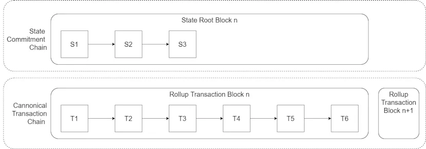
Importantly the Fraud Verifier contract does not delete any transactions or blocks. The rollup chain is not "rolled back" after a successful fraud proof. The Sequencer will now recalculate all StateRoots for each transaction and publish them to the chain. This may change some assumptions that the rollup chain previously made about the state of the chain, including considering transactions invalid that were previously considered valid.
To ensure enough time for an honest node to submit a fraud proof, the optimism protocol has a seven-day waiting period for a user to withdraw funds to the L1. This means an honest node must submit a fraud proof within 7 days of a malicious StateRoot being produced to guarantee that the stolen funds aren't maliciously withdrawn out of the rollup to the L1.
Incentives
Executing a Fraud Proof on the L1 chain is extremely gas intensive. The honest node must pay upfront for all the gas costs necessary to execute the fraud proof including deploying the State Transitioner and State Manager contracts, uploading all of the necessary state to the L1 including deploying any necessary contracts and calling all of the required functions. We can't expect an honest node to do all of this out of their own pocket, particularly if the invalid state doesn't affect any of their balances, so we need to incentivise them.
To run a Sequencer on Optimism, the Sequencer must put up collateral. This is done by another Optimism contract on the L1 called the Bond Manager contract. So long as the Sequencer acts honestly it gets to keep its collateral. When an honest node completes a successful fraud proof, a percentage of the malicious Sequencer's collateral is slashed and distributed to the honest node(s) who executed the fraud proof. This creates an economic incentive for honest nodes to execute fraud proofs, even if the state being disputed does not directly affect them.
How to make fraud proofs more efficient
The method for fraud proofs outlined above is known as non-interactive fraud proofs as it allows a party to prove the incorrectness of a StateRoot without the participation of any other party.Non-interactive fraud proofs are simple in design but very gas intensive. Optimism is working on introducing a more efficient interactive fraud proof system.
Interactive fraud proofs are more complicated because they require the involvement of two parties – a Challenger and a Defender. The Defender is the Sequencer who posted the original StateRoot to the L1 and the Challenger is the node disputing the StateRoot.
Instead of disputing the state transition of an entire transaction, the goal of interactive fraud proofs is to determine a single step of execution within a transaction that the parties disagree over, then have the L1 determine the correct state transition of just that step.
The honest node doesn't know which execution step is the invalid step that results in the invalid StateRoot, only that at least one step must be wrong. We need to work out which step the Challenger and the Defender disagree on.This requires the cooperation of both parties. Importantly we can determine which is the disputed step on the L2 saving on gas, making the only necessary step for the L1 determining the correct state transition of that one step.
When a Challenger challenges a Defender, the Defender must split its steps in performing the state transition into two roughly equal parts and reveal these to the Challenger on the L2. The Challenger must then state which of the two parts has an instruction that it is disputing thus halving the surface area of the disagreement. The challenger now must reveal what it believes are the valid execution steps for the remaining part of the challenge and break those steps into two roughly equal parts. The Defender will then choose which half of the instructions it believes the challenger has performed incorrectly.This process will go back and forth until the Defender and the Challenger disagree over a single step of execution. Each party will reveal what they believe to be the correct state transition of that single step of execution.
At this point, the single step of execution and the state required to perform just that step of execution will be uploaded to the L1 and the L1 will determine the correct state transition for that step. Whichever party did not have the same state transition output as the L1 will be the loser and have their stake slashed. If the loser is the defender, StateRoots will be deleted from the L1.
To ensure that both parties are incentivised to participate promptly, whenever a challenge is started a "chess clock-like" system is created. Each party has a given amount of time to win the dispute. Whenever it is the Defender's turn their clock will count down and the Challenger's clock will be paused and vice versa. If the Defender doesn't respond to the challenge at all, their timer will run out and they will lose the dispute and be penalised by default. Similarly, if either party takes too long to make their moves and runs out of time, they will lose by default.
Bridging between L1 & L2
To take advantage of the cheap gas fees on a rollup, users must first bridge their assets from the L1 to the rollup. How does this work on Optimism?
L1 to L2 bridges are not like cross-chain bridges where a third-party intermediary must be trusted or where a chain with more secure consensus must trust a chain with less secure consensus. L1 to L2 bridges (and vice versa) are, in theory, trustless and rely on the security of the L1 to bridge between the two blockchains.
Optimism makes use of two types of contracts for inter-chain bridging:
Messenger Contracts – Manage general purpose communication between L1 and L2.
Token Bridges – Token bridges enable users to move assets between the L1 and L2.
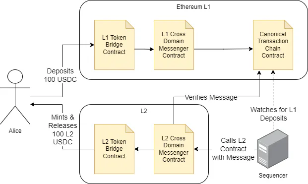
Step 1 – Alice initiates a deposit by sending 100 USDC to the token bridge contract on the L1. The transaction occurs on the L1 meaning Alice has to pay L1 gas fees for the transaction.
Step 2 – The token bridge contract escrows the tokens and calls the sendMessage function in the Messenger contract on the L1. The message contains information about Alice's deposit.
Step 3 – The messenger contract sends the deposit transaction to the queue within the Canonical Transaction Chain contract. Next time the Sequencer posts a rollup block, all transactions in the queue will be forcibly included in the block.
Step 4 – As the Canonical Transaction Chain Contract is on the L1, it cannot call contracts on the L2 to continue the deposit process. An honest Sequencer will watch the Canonical Transaction Chain for L2 deposits and relay deposits to the L2 by calling the L2 Cross Domain Messenger Contract. If a Sequencer fails to relay, any user can call the L2 Messenger contract.
Step 5 – The L2 Messenger Contract will verify the message and forward the transaction to the L2 bridge contract asking it to mint 100 USDC tokens on the rollup.
Step 6 – The bridge contract transfers 100 USDC tokens to Alice's L2 address. Alice now has 100 USDC tokens on the rollup where they can transact them more cheaply than on the L1.
Withdrawing from L2 to L1
Now let's consider an example where Alice wants to withdraw her 100 USDC back to the L1.
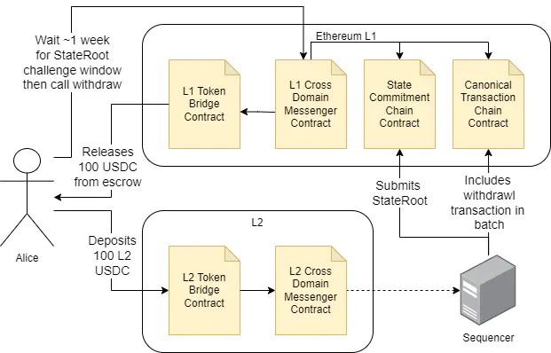
Step 1 – Alice initiates a withdrawal by sending 100 USDC to the L2 token bridge contract.
Step 2 – The L2 token bridge burns (deletes) the 100 USDC on the rollup and sends a message to the Messenger Contract on the L2 with information about the withdrawal.
Step 3 – The next time the Sequencer publishes a new rollup block to the Canonical Transaction Chain it will include the withdrawal message as an L2 transaction.
Step 4 – The Sequencer will publish the StateRoot for Alice's withdrawal on the State Commitment Chain contract. Alice must wait for ~1 week for anyone to challenge the StateRoot that the Sequencer published for Alice's withdrawal transaction. Until this time has passed, Alice can't use her tokens on the L2 (they've been burned) or withdraw them on the L1.
Step 5 – Once the dispute period has passed, Alice (or any other relayer) can call the L1 Messenger contract to continue the withdrawal. The L1 Messenger contract will verify the message data and ensure that the dispute period for this transaction has passed.
Step 6 – The L1 Messenger Contract then sends a request to the L1 token bridge to release 100 USDC from escrow and send the tokens to Alice's L1 address.
Optimism FUD
If you've gotten this far, you might be thinking that rollups are the holy grail of blockchain scalability and wondering why anyone is bothering with scaling solutions other than rollups. The answer is that rollups are still an immature technology and are not yet the trustless scaling solutions they are made out to be. Here are some critical issues that Optimism (and other rollups) will have to address moving forward:
Fraud Proofs are Disabled
The ability of an honest minority to submit Fraud Proofs to correct invalid StateRoots is critical to the security of an optimistic rollup. Without this functionality, L2 users must trust a centralised Sequencer to not act maliciously by attacking the L2 or stealing funds from the L1 deposit contract. Optimism had implemented a Fraud Proof system, however, discovered vulnerabilities in testnets before launch. Instead of delaying the mainnet launch to fix the vulnerabilities, Optimism decided to launch without any Fraud Proof system enabled. Optimism still operates today without any Fraud Proof functionality. Whilst there is no known instance where the Optimism Sequencer has acted maliciously, it can steal all $1.3 billion currently deposited to the L2. Optimism is working on a new Fraud Proof system to be released in the future.
Upgradable Contracts
The OVM_L1CrossDomainMessenger, L1StandardBridge and LibAddressManager are upgradable by a 5 of 8 multisig wallet. There is notime delaybuilt in when upgrading any of these contracts. Similarly to concerns with Polygon's multisig control over staked funds, Optimism, with the support of 5 key holders, can censor messages, pause the bridge or upgrade the bridge altogether to steal all funds deposited on the L1. Given that Optimism is still in early development and that it intends to roll out new versions of the protocol, Optimism does not intend to revoke its ability to upgrade its contracts in the near term.
It should, however, consider adding a time delay to upgrades once the system matures so that if a malicious code upgrade is detected, users have time to withdraw funds back to the L1 before the upgrade is complete.
Centralised Sequencer
Only a single centralised Sequencer operated by Optimism is currently authorised to produce new Optimism blocks on the L1 Canonical Transaction Chain contract. Whilst users can use the enqueue() function in the Canonical Transaction Chain Contract on the L1 to force their transactions to be included in the next rollup block (if it comes), avoiding censorship, they cannot force a rollup block to be created. In the event the Sequencer goes offline or decides to maliciously stop producing blocks, all funds are frozen, no transactions can occur on the L2 and funds cannot be withdrawn to the L1. Additionally, the centralised Sequencer could exploit its power as the sole block producer to front-run L2 transactions for its benefit and extract MEV from the L2. Optimism has plans to create a network of decentralised Sequencers to prevent such a scenario from being possible but this is unlikely to be implemented in the short term.
Conclusion
Whilst rollups are still immature, their future presents one of the best currently known solutions to scaling blockchains without compromising on security or decentralisation. This revelation is why the Ethereum community has restructured its roadmap to a rollup-centric roadmap, focused on optimising the L1 to support rollups however they can.
In this document, we only managed to cover 1 implementation of an optimistic rollup (Optimism) but there are many implementations of optimistic rollups (e.g. Arbitrum, Boba, etc…) and many other types of rollup solutions such as zk-rollups, validiums and more that will offer even cheaper gas fees, higher TPS and instant L2 to L1 withdrawals. We'll cover some of these topics in future research articles.
We learned that a compressed rollup on present-day Ethereum can deliver a 100x increase in TPS compared to the L1. As Ethereum delivers on its rollup-centric roadmap the maximum TPS will increase substantially.
Proto-Danksharding (EIP-4844), scheduled for late 2023, will add an extra 1,048,576 bytes of storage per L1 block for rollups to post data to with a separate fee market. At 12.5 bytes per transaction, you would need ~84,000 (1,048,576 bytes / 12.5) rollup transactions per block before capacity is reached and the fee market kicks in. Until the fee market kicks in, at 1 gas per byte, with a minimum Gas Price of 7 wei (as set by EIP-1559), to post to the L1 each rollup transaction would cost ((1 * 7) * 12.5) = ~88 wei or 0.000000000000000088 ETH, or at an ETH price of USD $1,200, $0.0000000000001. Full Darksharding is likely to increase this reduction in fees by another order of magnitude. At this point Ethereum will face a very different problem, how to prevent empty blocks and a majority of value accrual taking place on L2s, diverting revenue away from L1 validators, decreasing the L1 security budget and making it less costly to attack the entire ecosystem – a conversation for another article.
Rollups will drive the industry towards a thriving and competitive multi-chain future. The L1 will be used by humans less and less as it becomes a storage and settlement layer for all the other blockchains where individual users will interact and execute transactions. Fees will be negligible, security will be unparalleled and decentralisation unmatched.
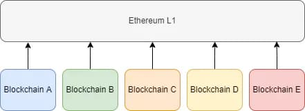